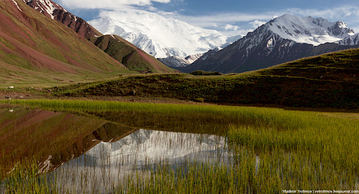

Кыргызстан
Кыргызстан же Кыргыз Республикасы (КР) Борбордук Азияда жайгашкан мамлекет.
Кыргызстан аймактын эн аз калктуу олкосу
БУУнун эсебинде 2050-жылга барып кыргызстандыктардын саны 7,5 миллионду тузот. Бирок Кыргызстан Борбор Азиянын эн аз калктуу олкосу бойдон калат.
Кыргызстандын калкы 7 миллионго жетти
Кыргызстандын ичинде 7-область бар, аларды атап кетсем.
- Баткен
- Ош
- Жалал-абад
- Нарын
- Талас
- Чуй
- Ысык-кол
Жана ошондой эле Кыргызстан менен кошуна мамлекеттер.
- Озбекистан
- Казакыстан
- Тажикистан
- Кытай
Кыргызстандын келечеги кандай болот?
Буйруса Кыргызстан TOP 1 мамлекеттерден болот ИН ШАА АЛЛАХ.
